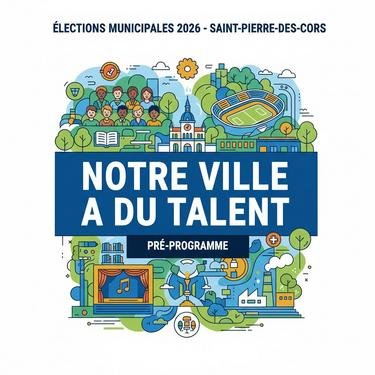

Saint-Pierre-des-Corps est une ville populaire, riche de ses habitant·e·s, de ses associations, de ses agent·e·s municipaux, de ses commerces et de ses entreprises. Sa force ne réside ni dans les opérations de communication ni dans les logiques technocratiques, mais dans l’intelligence collective et les solidarités concrètes qui structurent son quotidien.
Notre projet municipal s’inscrit dans une alternative citoyenne, construite depuis 2022 avec des corpopétrussien·ne·s natifs ou résidants de longue date, majoritairement locataires des quartiers populaires de notre ville. Il défend un principe simple : les décisions doivent être prises avec les habitant·e·s et uniquement au regard de l’intérêt général et la réponse à un besoin identifié.
Nous portons une gauche locale, à taille humaine, fidèle à cette idée : « Être de gauche, c’est d’abord penser le monde, puis son pays, puis ses proches, puis soi., être de droite c’est l’inverse » – Gilles Deleuze. Cela est pour nous bien plus parlant que les logos partisans comme marque de fabrique.
Notre ambition : une ville apaisée, solidaire, démocratique et populaire, qui protège, émancipe et prépare l’avenir.
Cette ambition repose sur trois principes transversaux qui guideront l’ensemble de notre action municipale : l’éthique publique, le soin porté aux plus fragiles à chaque âge de la vie et l’égalité territoriale dans l’accès aux droits, à la santé et aux services publics.
*
PRINCIPES TRANSVERSAUX – DÉONTOLOGIE, ÉTHIQUE ET EXEMPLARITÉ PUBLIQUE
La confiance démocratique se construit par l’exemplarité. Nous faisons le choix d’une gouvernance municipale fondée sur la transparence, l’éthique et le respect strict de l’intérêt général.
Nos engagements déontologiques
-
Adoption de notre Charte des élu·e·s municipaux, engageant chaque membre de l’exécutif et du conseil municipal ;
-
Application et diffusion des recommandations de l’qssociation ANTICOR en matière de prévention des conflits d’intérêts, de transparence des décisions et de contrôle démocratique ;
-
Refus de toute confusion entre intérêts privés, intérêts partisans et décisions publiques.
Des outils concrets
-
Nomination d’un·e déontologue indépendant·e, saisi obligatoirement pour les décisions sensibles du conseil municipal (marchés publics, cessions foncières, délégations de service public, partenariats structurants).
-
Publication claire et accessible des décisions, délibérations et engagements financiers.
-
Formation des élu·e·s à l’éthique publique et à la prévention des conflits d’intérêts.
L’éthique n’est pas un supplément d’âme : c’est une condition de l’action publique efficace et respectée.
*
AXE 1 – LE SERVICE PUBLIC COMME FIERTÉ ET COMME DROIT
Le service public municipal n’est pas un coût : c’est un investissement social et humain. Il garantit l’égalité réelle entre les quartiers et la dignité de toutes et tous.
Nos engagements
-
Même qualité de service dans tous les quartiers.
-
Accueil digne, humain et respectueux dans chaque service municipal.
-
Aucun recul du service public local.
Nos actions
-
Création d’un guichet municipal unique, physique et numérique, avec accompagnement humain.
-
Adoption d’une charte municipale de la qualité du service public, opposable et évaluée par les habitant·e·s.
-
Permanences municipales de proximité dans les quartiers.
-
Transparence totale sur les décisions et les budgets.
AXE 2 – JUSTICE FISCALE, TARIFAIRE ET SOUTIEN AUX FAMILLES
À Saint-Pierre-des-Corps, le pouvoir d’achat doit être une priorité municipale.
Nos engagements
-
Une révision à la baisse de la fiscalité en revenant sur les mesures injustes prises pour rééquilibrer le budget insincère de 2021 : une priorité pour notre ville qui connait le plus faible revenu par habitant.es du département et ne doit plus être la ville où le foncier est le plus cher du département.
-
Des tarifs municipaux adaptés aux revenus.
-
Aucune hausse d’impôt ou de tarif sans débat public.
Nos mesures ….
-
Révision des tarifs municipaux de 2020 pour les services essentiels.
-
Révision et baisse de la fiscalité foncière
-
Création d’un quotient familial municipal unique, simple et équitable.
-
Restauration scolaire en élémentaire et en primaire gratuite
…. Pour soutenir les familles
« Sur Tours Métropole Val de Loire (TMVL), la ville de Saint Pierre des Corps a le plus haut taux de ménages avec famille(s) et familles monoparentales » ((données INSEE 2023)
-
Priorité d’accès aux modes de garde et activités municipales pour les familles monoparentales.
-
Tarification réellement progressive.
-
Adaptation des horaires des services publics.
AXE 3 – DÉMOCRATIE, SOLIDARITÉ, TALENTS POPULAIRES ET PRIORITÉ AUX SENIOR·E·S
Redonner le pouvoir aux habitant·e·s
-
Conseils citoyens de quartier dotés d’un pouvoir réel. (Une douzaine de quartiers seront définis ensemble à taille humaine pour concrétiser cette action)
-
Budgets participatifs dans chaque quartier.
-
Droit d’interpellation citoyenne en conseil municipal.
-
Dispositif municipal dédié à la participation citoyenne.
Une ville solidaire et inclusive
-
Tolérance zéro contre toutes les discriminations.
-
Accès effectif aux droits.
-
Services municipaux formés à l’égalité et au respect.
.
Bien vieillir à Saint-Pierre-des-Corps : une priorité municipale pour politique ambitieuse pour nos senior·e·s
Face au vieillissement de la population, nous affirmons un choix clair : permettre à chacun·e de bien vieillir dans sa ville, en sécurité, en autonomie et dans la dignité.
-
Création d’une Maison Bleue des Senior·e·s, lieu ressource municipal dédié à l’accompagnement du vieillissement : information sur les droits, prévention santé, lutte contre l’isolement, activités sociales et intergénérationnelles. Étude de faisabilité dès l’élection pour son installation dans la maison rue Gras Cour qui accueillait La Mission Locale
-
Coordination renforcée avec les services sociaux, les associations, les professionnels de santé et les familles.
-
Développement d’actions de prévention (mobilité, numérique, santé, logement adapté).
-
Intégration systématique des besoins des senior·e·s dans les politiques de mobilité, d’urbanisme et de cadre de vie
-
Avec la Métropole, concrétiser l’ouverture de cimetières, tant attendus, pour répondre aux besoins de tou-te-s les défunt-e-s vivant sur notre territoire
-
Programme Parrains & Marraines de quartier pour renforcer les solidarités intergénérationnelles.
Prendre soin de nos aîné·e·s, c’est prendre soin de toute la ville.
Valoriser les mémoires d’hier et les talents de demain
-
Création d’un Guichet unique social et des talents, point d’entrée pour l’accès aux droits et la valorisation des compétences locales.
-
Valorisation des mémoires ouvrières, patrimoniales et ferroviaires de la ville
-
Faire vivre les droits culturels sur notre territoire : faciliter l’accès aux équipements culturels mais au-delà, garantir la capacité de toutes et tous à exprimer et valoriser ses propres pratiques culturelles.
-
Repenser le pilotage des programmations culturelles au sein des équipements municipaux et lors des grands évènements en y intégrant la participation d’une commission mixte d’habitant.es décisionnaire
-
Soutenir la scène culturelle locale et valoriser des talents de demain : faciliter la représentativité de toutes les sensibilités culturelles et artisanales de la ville (scènes ouvertes, expositions, portes-ouvertes, ateliers, etc.)
-
Favoriser les pratiques sportives adaptées à chaque âge : création d’un parcours santé pour petits et grands au sein des espaces verts communaux
AXE 4 – UNE VILLE APAISÉE : CADRE DE VIE, SÉCURITÉ, SANTÉ ET TRANQUILLITÉ PARTAGÉE
Une ville apaisée est une ville qui prend soin de ses habitant·e·s, de son environnement et de ses espaces publics.
Nos principes
-
Une approche globale de la sécurité, fondée sur la prévention, la médiation et la présence humaine.
-
Une sécurité pilotée, évaluée et démocratique, jamais subie.
Nos actions
-
Réaménagement des rues et places en faveur des piétons, cyclistes et usages conviviaux.
-
Éclairage public adapté et entretenu pollution lumineuse.
-
Déploiement renforcé de médiateurs sociaux dans l’espace public.
-
Développement des mobilités douces et des transports en commun. Et refonte du plan de circulation de la ville
-
Création de conseils citoyens de quartier et d’événements de proximité.
Un axe santé structurant et territorial
La santé est un déterminant majeur de l’égalité réelle. La commune doit être facilitatrice, en complémentarité avec les compétences de l’État, de la Métropole et des professionnels.
-
Création, dans le cadre du projet ANRU de la Rabaterie, d’une Maison Médicale Polyservices, regroupant médecins généralistes, infirmier·e·s, professions paramédicales et actions de prévention.
-
Organisation de consultations et permanences délocalisées dans d’autres quartiers de la ville afin de garantir un accès équitable aux soins.
-
Travail en complémentarité avec Tours Métropole Val de Loire (TMVL) pour l’attractivité médicale, la coordination territoriale et les parcours de soins.
-
Développement d’actions de prévention santé, notamment concernant la santé mentale, porté par notre CMS en lien avec les écoles, les senior·e·s et les associations.
Évaluer pour mieux agir
-
Évaluation annuelle des politiques de sécurité avec les habitant·e·s.
-
Évaluation transparente des dispositifs de vidéoprotection existants.
-
Refus des réponses uniquement techniques : priorité à la désescalade, au dialogue et à la prévention.
AXE 5 – DÉVELOPPEMENT ÉCONOMIQUE LOCAL, COMMERCES ET ÉQUILIBRE TERRITORIAL
Le commerce de proximité est un pilier de la vie quotidienne, de l’emploi local et de l’identité urbaine. Sa transformation doit être pensée à l’échelle de l’ensemble de la ville.
Saint-Pierre-des-Corps doit être un partenaire actif au sein de la Métropole, sans renoncer à ses spécificités.
Nos engagements
-
Défendre les intérêts communaux dans les projets métropolitains. Exemple : Mésure d’impact de l’ouverture d’une bretelle de l’A10 et l’accès Gare au Sud.
-
Publier des rapports réguliers Ville / Métropole.
-
Mutualisations ciblées, utiles et évaluées.
Une stratégie commerciale à l’échelle communale
-
Élaboration d’une stratégie globale de développement commercial, articulant centre-ville, quartiers et futurs pôles, notamment le secteur de la Rabaterie dans le cadre de l’ANRU.
-
Accompagnement de la transformation du centre-ville : diversification des commerces, lutte contre la vacance commerciale, soutien aux commerces indépendants et de proximité.
-
Anticipation et structuration du futur secteur commercial de la Rabaterie, pour répondre aux besoins quotidiens des habitant·e·s sans concurrence destructrice avec le centre-ville.
-
Concertation avec les commerçant·e·s, les habitant·e·s et les partenaires économiques.
Gouvernance territoriale
-
Mise en place d’une gouvernance territoriale animée par le Maire, associant partenaires, institutions et acteurs locaux.
-
Commissions Municipales partenariales thématiques : logement, ville apaisée, commerces, quartiers populaires, services publics, plan climat.
-
Formation renforcée des élu·e·s et des agent·e·s.
AXE 6 – RESPECTER CELLES ET CEUX QUI FONT VIVRE LA VILLE : ROMPRE AVEC LE MÉPRIS, RECONSTRUIRE LA COOPÉRATION LOCALE
Pendant trop longtemps, les politiques municipales successives ont considéré celles et ceux qui font vivre la ville comme de simples variables d’ajustement : agent·e·s soumis à la pression managériale, associations mises en concurrence pour des subventions, commerces fragilisés par des décisions urbaines déconnectées, entreprises locales rarement associées aux choix structurants.
Nous faisons un choix de rupture clair : la ville ne se gouverne pas contre celles et ceux qui la font vivre, mais avec elles et eux. Saint-Pierre-des-Corps doit redevenir une commune qui respecte le travail, l’engagement et l’utilité sociale.
Saint-Pierre-des-Corps fonctionne grâce à un écosystème humain riche et complémentaire : agent·e·s municipaux, associations, commerçant·e·s, artisan·e·s, entreprises, salarié·e·s, bénévoles et travailleur·euse·s du quotidien. Toutes et tous contribuent à la vitalité, à la cohésion sociale et à la qualité de vie de notre commune.
Nous assumons une politique municipale qui met fin aux logiques de défiance, de mise en concurrence et d’invisibilisation, pour construire une coopération locale durable, fondée sur l’intérêt général.
Reconnaître et protéger les agent·e·s municipaux : un changement de méthode
Les agent·e·s municipaux ne sont pas un coût à contenir, mais une richesse à reconnaître. Nous rompons avec les politiques de pression, de silence et de précarisation.
Nos engagements – Respect effectif, protection et reconnaissance des fonctionnaires territoriaux. – Dialogue social réel, continu et loyal, et non formel. – Fin de la précarité structurelle et du recours abusif aux contrats courts.
Nos actions – Plan municipal renforcé de protection contre les incivilités et violences. – Amélioration des conditions de travail et prévention des risques psychosociaux, avec des moyens dédiés. – Association systématique des agent·e·s aux réorganisations, projets et choix structurants.
Soutenir le tissu associatif : sortir de la logique de survie
Les associations ne sont pas des prestataires low-cost du service public. Elles sont des actrices politiques au sens noble : solidarité, culture, sport, éducation populaire, démocratie locale.
-
Fin de l’instabilité permanente des subventions. Avec une contractualisation triénale, respectant l’annuité budgétaire
-
Conventions pluriannuelles lisibles et sécurisantes.
-
Simplification réelle des démarches administratives. A ce titre nous œuvrerons pour que les appels à projets Politique de la Ville soit pensés, évalués et produite par les acteurs locaux eux-mêmes.
-
Reconnaissance pleine et entière du rôle des bénévoles et des salarié·e·s associatifs.
-
Association systématique du monde associatif à l’élaboration des politiques publiques qui le concernent.
Défendre les commerces, services et entreprises locales contre les décisions hors-sols
Les commerces de proximité, les services et les entreprises locales ne demandent pas des discours, mais de la cohérence.
Refus des projets urbains qui fragilisent l’économie locale existante.
Dialogue permanent et structuré entre la Ville et les acteur·rice·s économiques.
Soutien affirmé aux commerces indépendants et de proximité.
Prise en compte des conditions de travail, de l’emploi local et de l’utilité sociale dans les choix municipaux.
Valorisation des savoir-faire locaux et des parcours professionnels.
Construire une coopération locale durable et exigeante
Nous rompons avec la logique du chacun pour soi.
-
Mise en place d’espaces réguliers et décisionnels de dialogue entre la municipalité, les agent·e·s, les associations, les commerçant·e·s et les entreprises.
-
Refus de la mise en concurrence systématique au profit de complémentarités construites.
-
Inscription de l’action économique et sociale locale dans une trajectoire de transition écologique et de justice sociale.
-
Utilisation des leviers municipaux (commandes publiques, conventions, partenariats) pour soutenir l’emploi local et les pratiques responsables.
Respecter celles et ceux qui font vivre la ville, c’est rompre avec le mépris ordinaire et reconstruire une ville populaire, digne et solidaire.
AXE 7 – PAIX, JUSTICE ET SOLIDARITÉ INTERNATIONALE : UNE VILLE ENGAGÉE POUR LES DROITS HUMAINS
Saint-Pierre-des-Corps s’inscrit dans une tradition humaniste et internationaliste. Une commune populaire ne peut rester silencieuse face aux injustices, aux violations du droit international et aux atteintes aux droits humains. La paix n’est pas un principe abstrait : elle se construit par des engagements concrets, durables et assumés.
Nous affirmons que les collectivités locales ont un rôle politique à jouer dans la promotion de la paix, de la justice et du droit des peuples à disposer d’eux-mêmes.
Jumelage avec Hébron : un engagement concret et durable
Nous porterons un jumelage réel, actif et réciproque avec la ville d’Hébron, en Palestine, fondé sur le respect du droit international et des droits humains.
Ce jumelage ne sera ni symbolique ni protocolaire. Il visera à :
-
Construire des échanges durables entre habitant·e·s, associations, jeunes, acteur·rice·s culturels et éducatifs.
-
Soutenir des projets concrets dans les domaines de l’éducation, de la culture, du sport, de la santé et de l’accès aux droits.
-
Favoriser la connaissance mutuelle, la lutte contre les préjugés et l’éducation à la paix.
-
Affirmer, par l’action municipale, la solidarité avec le peuple palestinien face à l’occupation, à la colonisation et aux violations répétées du droit international.
Une diplomatie municipale fondée sur le droit et la justice
Saint-Pierre-des-Corps défendra une diplomatie locale cohérente, alignée sur les principes universels :
-
Respect du droit international humanitaire.
-
Défense des droits humains fondamentaux.
-
Refus de toute forme de racisme, d’antisémitisme, d’islamophobie ou de haine.
Créer une association nationale des villes et territoires jumelés avec la Palestine
Nous prendrons l’initiative de promouvoir la création d’une association nationale des villes et territoires français jumelés avec la Palestine.
Cette structure aura pour objectifs :
-
Mutualiser les expériences, les ressources et les projets entre collectivités engagées.
-
Porter une parole collective auprès de l’État, des institutions européennes et internationales.
-
Sécuriser juridiquement et politiquement les démarches de coopération décentralisée.
-
Donner de la visibilité aux actions locales en faveur de la paix et de la justice.
Saint-Pierre-des-Corps y prendra toute sa place, en lien avec les réseaux associatifs, les mouvements de solidarité internationale et les habitant·e·s.
Éduquer à la paix et à la justice
-
Développement d’actions d’éducation populaire, culturelle et scolaire autour de la paix, du droit international et de la solidarité entre les peuples.
-
Soutien aux initiatives associatives locales engagées pour la paix et la justice.
-
Organisation de temps forts municipaux (rencontres, expositions, débats) pour informer, comprendre et agir.
S’engager pour la paix et la justice, ce n’est pas s’éloigner des préoccupations locales. C’est affirmer que la dignité humaine, ici comme ailleurs, est indivisible.
AXE 8 – UN PLUM AU SERVICE DES HABITANT·E·S ET DE LA TRANSITION ÉCOLOGIQUE
Urbanisme et logement
-
Respect du PPRI et des équilibres écologiques.
-
Objectif de 65 logements par an, diversifiés. Réalisés à partir de remise en service de logements vacants ou de constructions neuves
-
Relance des projets qui n’ont pu voir le jour, comme par exemple le projet porté par ICF, pour nos jeunes.
-
Diagnostic complet du patrimoine communal bâti et non bâti en vue de leur affectation future en fonction des projets envisagés et réalistes. (Maintien dans le parc public, réhabilitation, vente…)
-
Création de jardins familiaux et d’espaces partagés.
-
Plan de rénovation thermique annuel des logements sociaux défins par les bailleurs annoncés publiquement
Patrimoine naturel et ligérien
-
Audit écologique et d’usage des berges de la Loire.
-
Création d’un Parcours Nature ligérien éducatif et accessible
-
Étude d’impact environnemental systématique pour tout nouvel aménagement.
-
Affirmation et concrétisation d’un parcours non contraint pour les circulations douces de la gare TGV à la Loire (en passant par le Centre Ville et le Chemin Vert – Grand Mail) permettant de se rendre en loire à partir des 3 accès prévus au PLUM. Penser avec la création de la passerelle piétonne enjambant les voies SNCF un itinéraire pour mobilité douce vers le Cher et la Bire du Bois des Plantes.
Transition écologique et alimentaire
-
Poursuivre et amplifier l’adaptation des équipements scolaires et périscolaires face aux enjeux climatiques avec la renaturation des cours d‘écoles
-
Sensibiliser aux enjeux climatiques dès le plus jeune âge : accompagner les enfants et l’ensemble des acteurs de la communauté éducative à la transition écologique et alimentaire
-
Des repas bio dans les cantines de nos enfants : accompagner notre cuisine centrale sur le chemin de la transition alimentaire (alimentation bio, zéro déchet et circuits cours)
-
Renouer avec notre tradition maraîchère en favorisant l’implantation de maraîchers en production bio sur la commune
-
Lutter contre la dégradation de la biodiversité : créer davantage d’espaces verts publics et de jardins familiaux sur notre commune, en lien avec la Loire, afin de préserver les réseaux de circulation écologique (trame vertes, noires et bleues).
2026–2027 : LA PREMIÈRE ANNÉE POUR RENDRE LE POUVOIR
Réparer, organiser, agir.
Dès la première année : – Des tarifs plus justes. – Des services publics plus humains. – Des agent·e·s reconnu·e·s. – Des espaces de décision ouverts. – Une municipalité qui écoute, explique et agit.
Saint-Pierre-des-Corps a du talent. Ce mandat servira à le révéler et à le protéger.
N’hésitez pas à nous contacter : 07 77 96 61 40 et en écrivant à vesemt@gmail.com et à nous suivre sur les réseaux sociaux.
Pour aller plus loin et retrouver plus d’informations (exemple charte des Elu-es) n’hésitez pas à vous rendre sur notre site : VESEMT.ORG
Commentaires